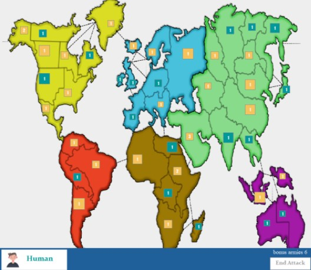
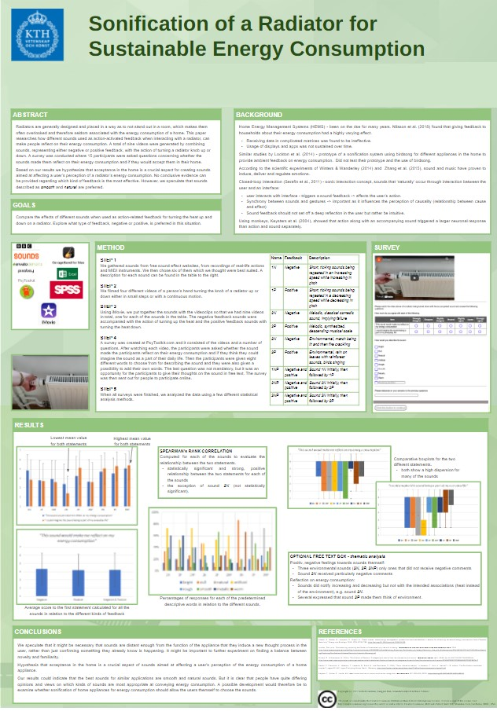

A group project from a course about Multimodal Interaction and Interfaces, made together with Solbritt Gateman, Amanda Lindqvist
and Johanna Lundqvist. We created an Android application where we used augmented reality together with image tracking to paint in AR using a smartphone. We used Unity together with Vuforia
and the workload and task were evenly diveded amongs the group members.
First Person Tank Shooter with custom Level Of Detail system using distance and motion vectors

A group project together with Amanda Lindqvist where we implemened our own Level Of Detail system based on distance and velocity to a first person shooter game in Unity.
We also used Blender to create additional meshes to use in our LOD system. This was made during a Computer Graphics and Interaction course.
Risk Game with MiniMax AI

A group project from a Software Engineering. The Swedish Defence Research Agency (FOI) tasked my group with creating a Risk-like game with PvP and MiniMax functionality.
Sonification of a Radiator for Sustainable Energy Consumption

A group project together with Amanda Lindqvist, Solbritt Gateman and Jiangye Hae, from a Human Perception for Information Technology course. This project that explored whether adding sound to a
radiator could contribute to reduced energy consumption.